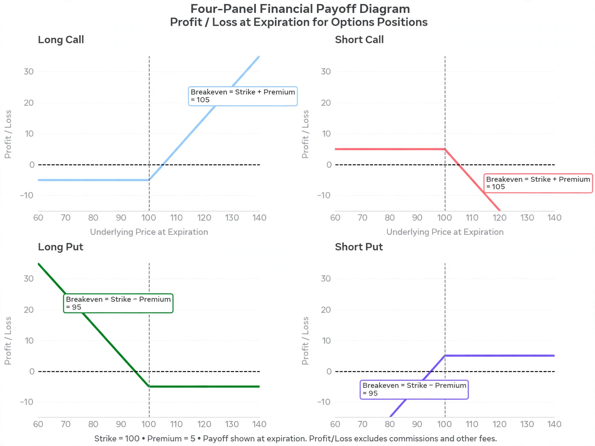

| Type | Derivative contract |
|---|---|
| Underlying | Stock, index, commodity, currency, bond |
| Main types | Call option, put option |
| Styles | American, European, Bermudan |
| Valuation | Black–Scholes model |

In finance, an option is a contract which conveys to its owner, the holder, the right, but not the obligation, to buy or sell a specific quantity of an underlying asset or instrument at a specified strike price on or before a specified date, depending on the style of the option. Options are typically acquired by purchase, as a form of compensation, or as part of a complex financial transaction.
The two main types of options are call options, which give the holder the right to buy the underlying asset, and put options, which give the holder the right to sell it. The party that sells the option is known as the writer and receives a payment, the premium, from the buyer.
Historical uses of options can be traced to ancient Greece, where the philosopher Thales of Miletus is said to have profited from options on olive presses. Modern options markets developed in the nineteenth and twentieth centuries; the Chicago Board Options Exchange (CBOE), founded in 1973, standardized listed options trading in the United States. The same year, Fischer Black, Myron Scholes and Robert C. Merton published the Black–Scholes model for option pricing, which transformed derivatives markets.
An option contract specifies the underlying asset, the quantity, the strike price, and the expiration date. American options may be exercised at any time before expiration, whereas European options may be exercised only at expiration. Options are settled either by physical delivery of the underlying or by cash settlement of the difference in value.
The value of an option depends on the price of the underlying asset, the strike price, the time to expiration, volatility, and the risk-free interest rate. Its price can be decomposed into intrinsic value and time value. Sensitivity measures known as "the Greeks" — delta, gamma, theta, vega and rho — describe how the option price responds to changes in these inputs.
While buyers of options have limited loss (the premium paid), writers of uncovered ("naked") options face potentially unlimited losses. Complex option strategies contributed to the collapse of Long-Term Capital Management in 1998.
From Wikipedia, the free encyclopedia. Recreated from memory.